This page describes how to assemble the controller routing board for a rack-mount sensor fusion test rig. The sensor fusion test is part of the Camera Image Test Suite (Camera ITS) in the Compatibility Test Suite (CTS). The rack-mount sensor fusion controller is used when multiple sensor fusion rigs are controlled by a single host, such as in a lab environment.
Rack-mount sensor fusion controller overview
Sensor fusion test rig
The sensor fusion test rig provides a fixed motion of the phone for reproducible testing. The phone is rotated in front of a target to allow image capture with the phone at various positions.
The test rig rotates the phone around the camera center of axis 90 degrees and back in about 2 seconds. Figure 1 shows a phone moving in a sensor fusion test rig.

Figure 1. Phone movement in test rig
Servo motor control
The analog servo motors in the test rig are positional servos controlled using pulse-width modulation (PWM). A typical positional control example is shown in Figure 2. The control signal has a period of 20 ms. Changing the pulse width to the minimum width moves the motor to the neutral position and changing the pulse width tomthe maximum width moves the motor 90 degrees counterclockwise.
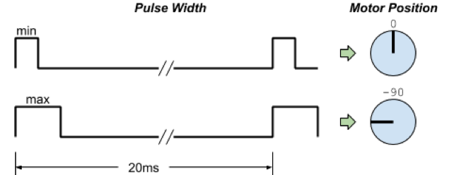
Figure 2. Typical servo control description
Sensor fusion controller implementation
To control the servo motor motion via a host, the sensor fusion test rig requires a USB connection. The test rig controller uses a USB-connected CanaKit UK1104 relay board with four relay outputs. The output of the relay board is connected to a SparkFun WIG-13118 servo trigger. The CanaKit board is shown below in Figure 3, and the SparkFun board is shown in Figure 4. The CanaKit board is powered by an external 12V supply. The SparkFun servo trigger is a 5V-powered board as the servo motor uses a 5V supply. Tthe SparkFun servo trigger provides smooth motion.
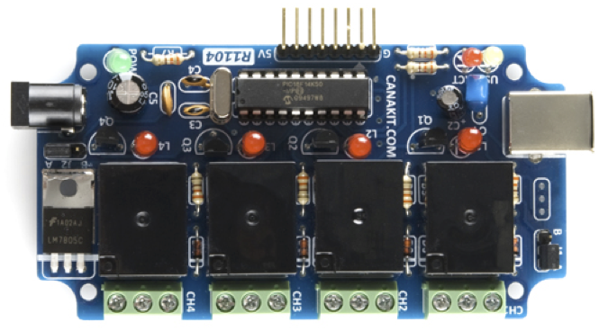
Figure 3. CanaKit UK1104 USB relay controller (top view)
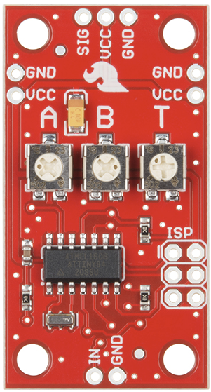
Figure 4. SparkFun WIG-13118 servo controller (top view)
The sensor fusion controller implementation is assembled using soldered wiring to connect the two boards. The circuit schematic is shown in Figure 5. Four wires are manually soldered and a single servo control output is provided on channel 1. The 5V VCC required for the SparkFun servo controller is slaved off the CanaKit internal 12V to 5V regulator. The wiring simplicity allows for high production yields.
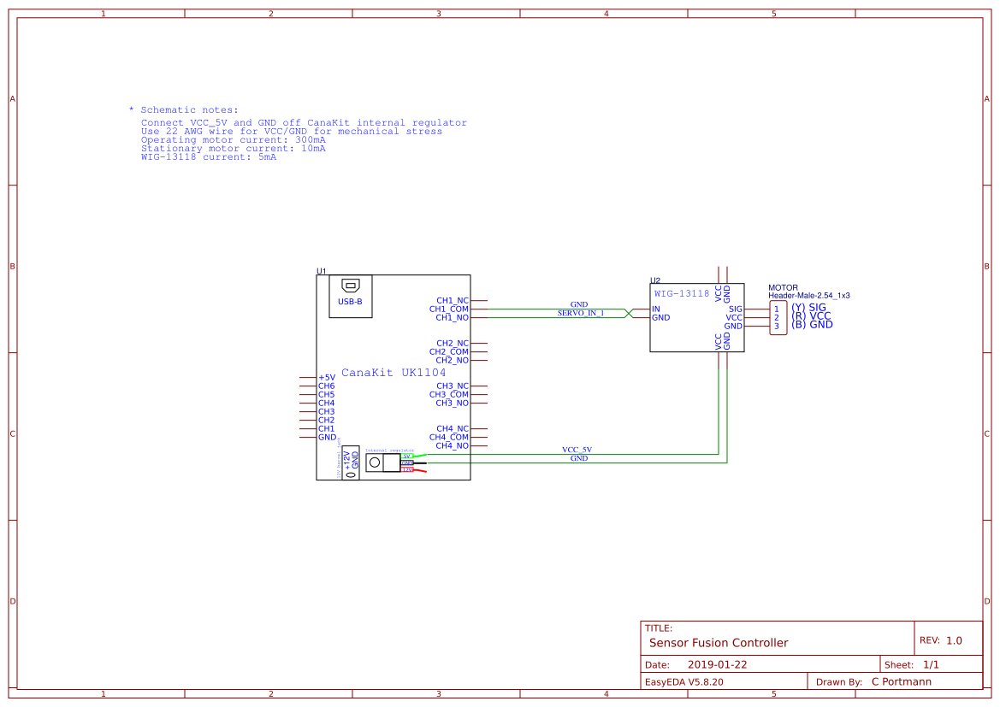
Figure 5. Sensor fusion controller rev 1, showing single sensor fusion box controller
Rack-mount sensor fusion controller
The rack-mount implementation enables multiple test rigs to be controlled by a single host, driving down costs in a lab. The existing CanaKit relay board allows up to four servo triggers to be controlled. The rack-mount implementation adds an external regulator and bypass capacitors to handle the additional current load from the added servo triggers. The schematic is shown in Figure 6. In contrast to the single-channel sensor fusion controller in Figure 5, the rack-mount controller requires at least 10 wires in addition to VCC/GND connections between the servo triggers. Although this could be hand-wired, the assembly process would be error-prone. Instead, the rack-mount implementation uses a custom routing board.
Sensor fusion routing PCB
To improve assembly time, increase yields, and simplify rework, a custom printed circuit board (PCB) routes the interconnects between the two boards and provides a mounting substrate. Using a routing PCB for interconnects, the final system can be screwed together with standoffs, allowing non-destructive disassembly.
A two-layer routing board, designed with an open-source online PCB design tool, is available at https://easyeda.com/portmannc/sensor_fusion.
The board dimensions are approximately 4.0 in. x 2.2 in., roughly the same size as the CanaKit board. A 1.6 mm thick board for is recommended for mechanical stability.
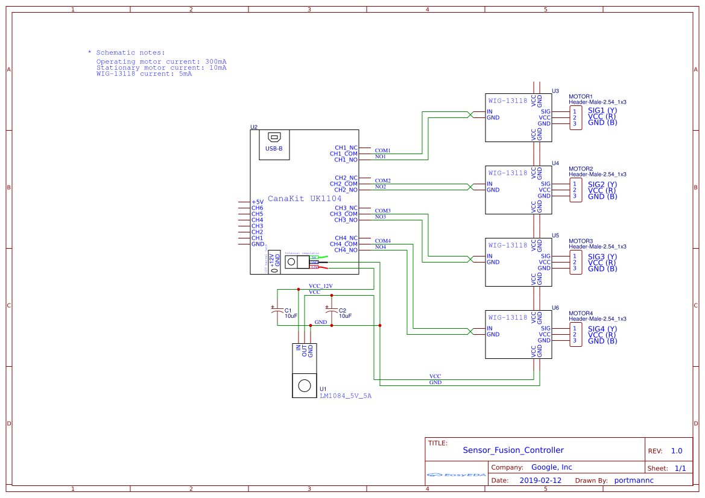
Figure 6. Rack-mount sensor fusion controller
The routing board is designed to be sandwiched between the CanaKit relay controller and the SparkFun servo controllers. The bottom side of the routing board is shown in Figure 7. The silk screen printing is in white, and the internal routes are in light green. There are holes near each corner outlined in white to align with the CanaKit board holes for mounting. Note the outlines for the supply regulator and caps. The regulator capacitors, C1 and C2, are 10 uF tantalum capacitors as described in the LM1084 datasheet. The 12V supply is down-regulated by the on-board regulator to +5V, VCC. (A heat sink is unnecessary because the regulator draws a maximum of 390 mA and there is copper on the top and bottom of the board below the regulator.)
The connections for the 4 relay outputs, NO[1:4], and the COM[1:4] connections are shown on the bottom of the board. Additionally, the main GND connection from the CanaKit board to the servo controller boards is labeled in the top center of the board. All labeled holes should be populated with female headers to connect to the CanaKit UK1104 board below.
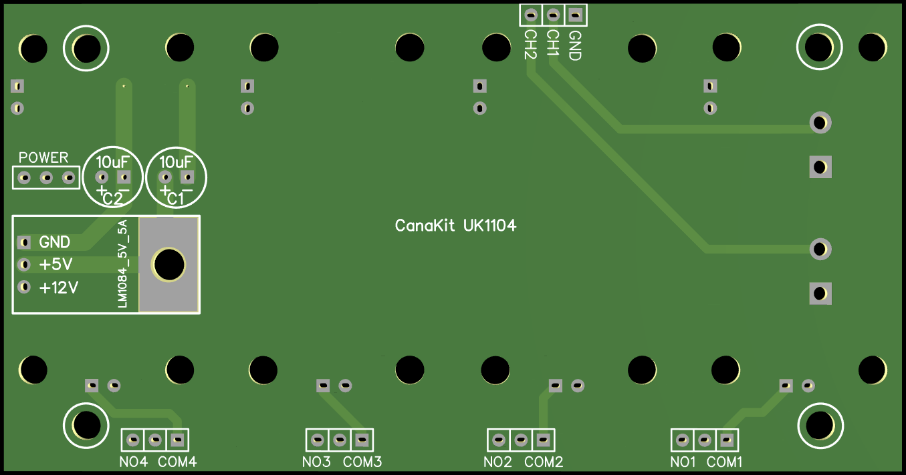
Figure 7. Sensor fusion routing board rev 1.1, showing traces and power circuitry (bottom view)
The top side of the sensor fusion routing board is shown in Figure 8. There are outlines for the WIG-13118 servo trigger boards and holes. While there are four holes for each servo trigger board, only two standoffs are required per servo trigger (circled in white). VCC and GND are routed to each of the servo triggers individually, so less than four servo triggers can be populated if desired. The left side has outlines for two connectors that are unnecessary for the rack-mount sensor fusion controller.
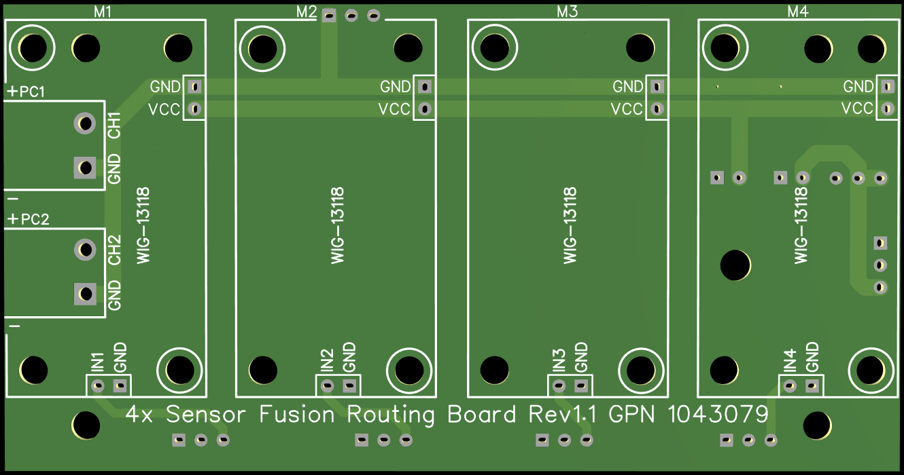
Figure 8. Sensor fusion routing board rev 1.1, showing traces (top view)
Assembling a rack-mount sensor fusion controller
Bill of materials (BOM)
| Qty | Description | PN/Link |
|---|---|---|
| 1 | 1.6 mm thick sensor fusion routing board | https://easyeda.com/portmannc/sensor_fusion |
| 4 | SparkFun WIG-13118 servo triggers | https://www.sparkfun.com/products/13118 |
| 1 | CanaKit UK1104 relay controller | https://www.canakit.com/4-port-usb-relay-controller.html |
| 1 | Texas Instruments LM1084 5V, 5A LDO regulator | http://www.ti.com/lit/ds/symlink/lm1084.pdf |
| 2 | 16V, 10%, 10 uF tantalum capacitors | TAP106K016CRS |
| 5 | 1x3x, 100 mil (2.54 mm) pitch, through-hole female headers | 952-1784-ND |
| 8 | 1x2x, 100 mil (2.54 mm) pitch, through-hole female headers | 952-1776-ND |
| 10 | 1x3x, 100 mil (2.54 mm) pitch, through-hole male headers, four with center pin removed to make 200 mil (5.08 mm) pitch | 952-3308-ND |
| 9 | 1x2x, 100 mil (2.54 mm) pitch, through-hole male headers | 952-3308-ND |
| 12 | 11 mm female-female standoffs (5 mm width, M3-0.5 threads) | R30-1001102 |
| 4 | 16 mm male-female standoffs (5 mm width, M3-0.5 threads) | R30-3001602 |
| 20 | M3-0.5 6 mm screws | 36-9191-3-ND |
Other tools needed
- Soldering iron, solder, solder-sucker
- Small Phillips head screwdriver
- Needle-nose pliers
- X-ACTO knife
- Precision drill bit: 1/32 in. (0.8 mm), or #67 gauge
Other resources
The following zip files are available to download.
- Rack-mount sensor fusion controller enslosure production files
- Gerber rack mount sensor fusion routing board (rev 1.1)
Populating the routing board
For the top of the routing board, install 2-pin female headers to connect the WIG-13118 boards above. A 2-pin female header at each VCC/GND pair and IN[1:4]/GND pair is required. The bottom of the board requires 3-pin female headers at each NO[1:4]/GND pair and a 3-pin female header at the POWER and GND holes. Additionally, the regulator and capacitors must be stuffed. A conceptualized side view of the populated board is shown in Figure 9.
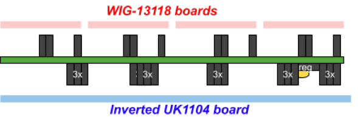
Figure 9. Router board populated with female headers, regulator, and capacitors (conceptualized side view)
Images of the populated routing board are shown in Figure 10 (top) and Figure 11 (bottom).
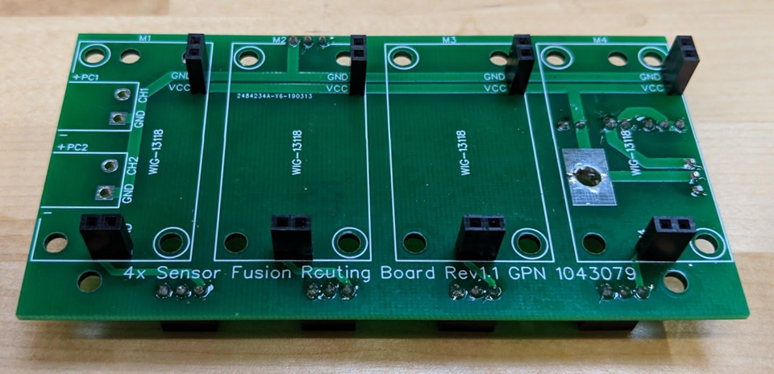
Figure 10. Populated routing board rev 1.1 (top view)
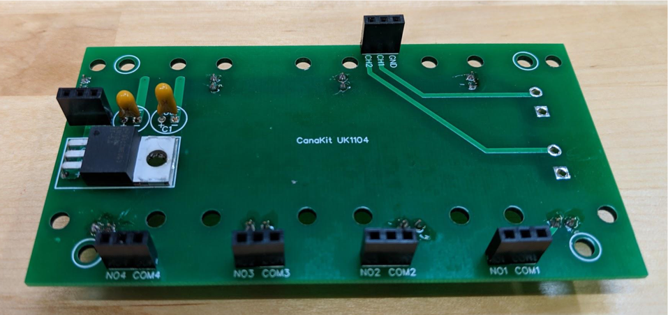
Figure 11. Populated routing board rev 1.1 (bottom view)
Preparing the CanaKit and SparkFun servo boards for assembly
To connect the CanaKit to the routing board, you must rework the CanaKit board. This includes:
- For NO[1:4] and COM[1:4], desolder the blue terminals on the top and add male headers on the bottom. As the headers use 200 mil spacing, three 100 mil headers can be used with the center connector pulled.
- For VCC_12, desolder the 3-pin male header on the top and mount a new one to the bottom. Discard the jumper.
- For GND, desolder the 8-pin right-angle male header on the top and replace it with three straight male headers on the bottom at GND.
- Attach four 16 mm male-female standoffs by threading four 11 mm female-female standoffs onto the male ends. The 16 mm standoffs should be on the top side of the CanaKit board where all of the components are populated.
The locations to desolder connectors and attach male header pins are shown in Figure 12.

Figure 12. CanaKit UK1104 board, locations to desolder (green) and attach male headers (yellow) (bottom view)
After desoldering the VCC_12 and GND locations, prepare the header pin openings to allow proper solder flow and connectivity. Clean the hole openings by using the recommended drill bit size to remove any excess solder in the hole. Don't use larger sizes as these can damage the plating on the inside of the hole. NO[1:4], COM[1:4] pins don't need drilling as the holes are for 1 mm posts on the screw down connectors instead of the 0.6 mm header posts. For all of the openings marked in yellow in Figure 12, the CanaKit board only has solder mask openings on the bottom. The board is flipped to make the board stack, so the solder mask needs to be scratched off on the top around the holes to allow proper solder attachment. Use an X-ACTO knife to scratch off the solder mask around the hole and expose the copper.
Figure 13 shows a close-up of the power jumper holes on the top of the board with the solder mask scratched away. The final reworked board is shown in Figure 14.
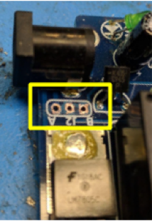
Figure 13. Close up of removed power (top view) jumper with solder mask scratched off
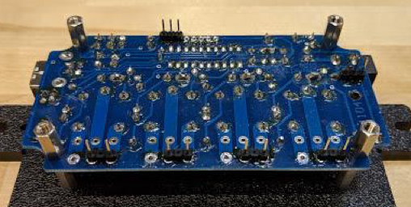
Figure 14. Reworked board with standoffs
To facilitate mating the CanaKit board and the routing board, insert the male header pins into the female headers on the routing board and mount everything onto the CanaKit board before soldering the headers on the CanaKit board. This reduces male header tilt, which can complicate assembly.
To ensure proper alignment during construction, solder the male headers on the CanaKit board with the boards assembled in their final configuration. Figure 15 shows the locations to solder the male header pins to the WIG-13118 boards. The following board work is required:
- IN/GND and VCC/GND: Solder the male 2-pin headers on the bottom for the connection to routing board.
- SIG/VCC/GND: Solder in the male 3-pin header on the top for the connection to the motors.
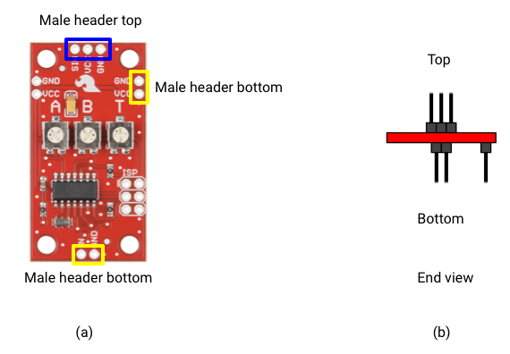
Figure 15. (a) SparkFun WIG-13118 with location to solder headers (top view); (b) Male headers soldered in place (conceptualized end view)
Final assembly
For final assembly, sandwich the boards together with the spacers for mechanical support. The routing board should have eight 11 mm female-female standoffs for the WIG-13118 boards mounted facing up by securing with screws through the bottom of the routing board. The 11 mm standoffs are secured first because once the routing board is mounted on top of the CanaKit board, there is no longer access to the bottom of the routing board.
To attach the routing board to the CanaKit board as shown in Figure 16, snap the routing board to the CanaKit board and secure the four M3 screws at the corners.
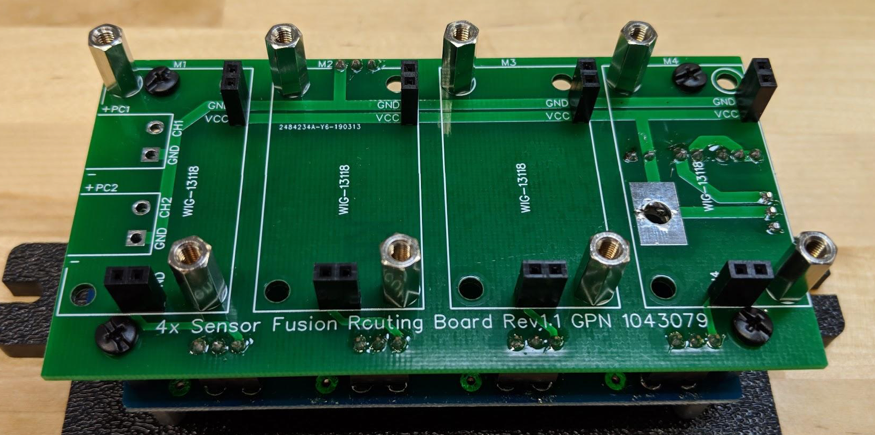
Figure 16. Routing board mounted to CanaKit relay board
Snap the SparkFun servo triggers into place and tighten the screws. Figure 17 shows a fully assembled system. Figure 18 shows a side view of the assembled system. Figure 19 shows the mechanical drawing for the controller enclosure, and Figure 20 shows the assembled system inside the enclosure.
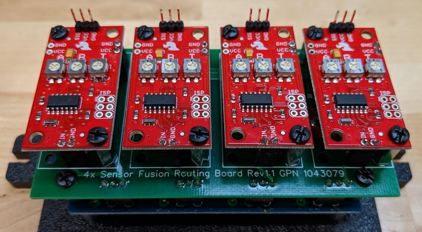
Figure 17. Assembled system (top/front view)
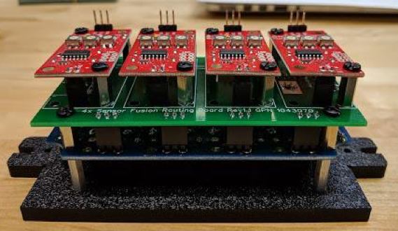
Figure 18. Assembled system (side view)
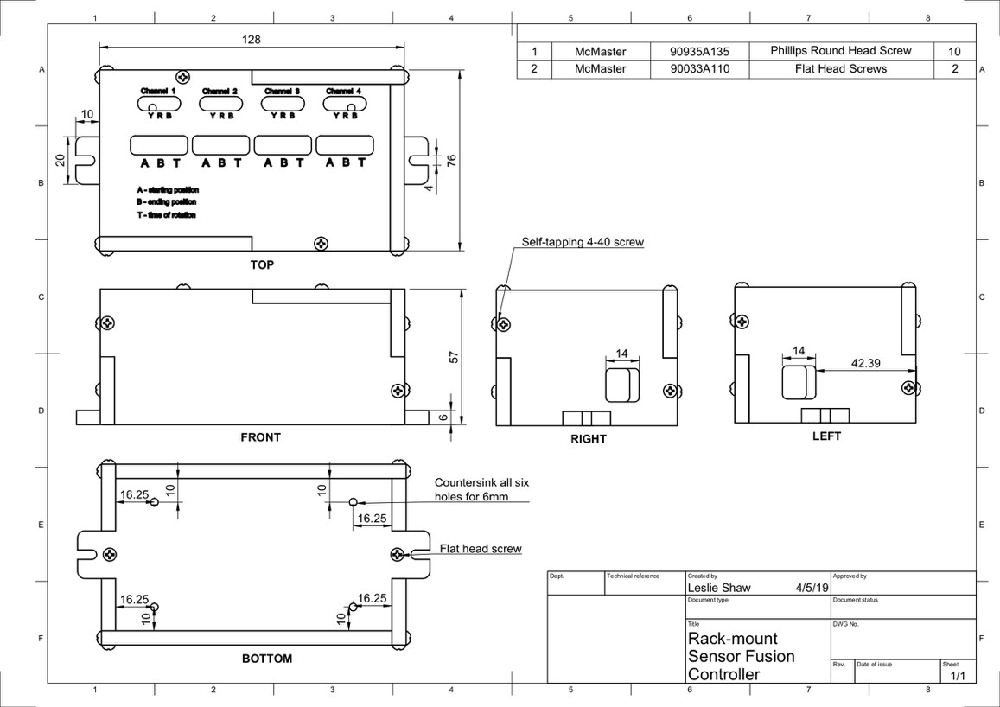
Figure 19. Mechanical drawing of controller enclosure
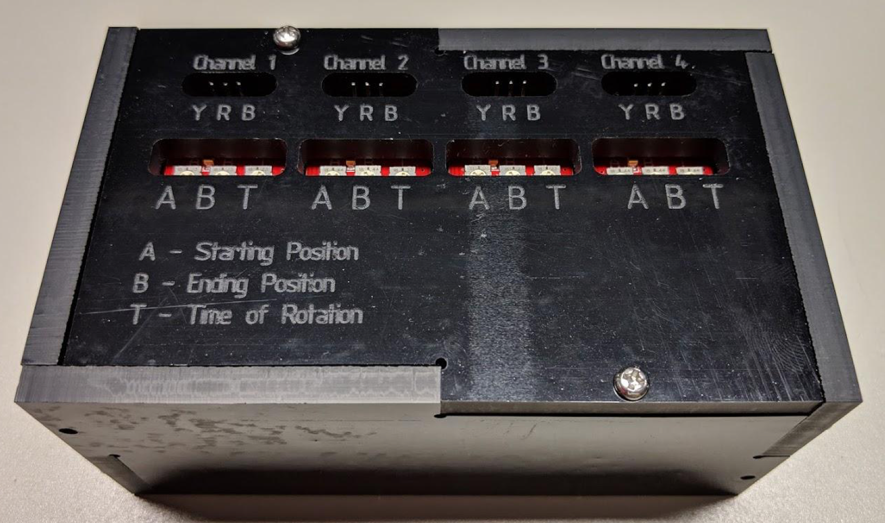
Figure 20. Assembled system in enclosure